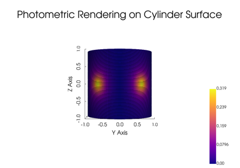
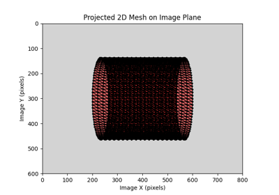
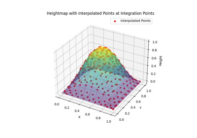

Example Gallery#
This section contains a collection of examples demonstrating how to use the package pysdic for various applications.

Rendering Photometric Properties on a Cylinder
Rendering Photometric Properties on a Cylinder

Project a Mesh on a Camera and obtains the corresponding pixel coordinates (and jacobians of the projection)

Heightmap interpolation and projection at integration points
Heightmap interpolation and projection at integration points